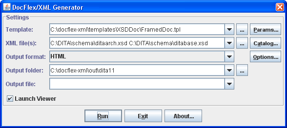
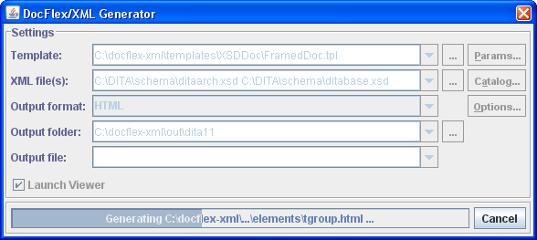

generator.bat to specify the 'JRE'
variable according to the location of Java 6, Java 5 or Java 1.4.x installed on your system.
generator.bat found in
DocFlex/XML RE root directory.
Here is the precise Java command line that starts the generator:
java [java_options] <class_path> <generator_class> [options] [XML files]
where
java is the Java Interpreter located at 'bin' directory of
JDK/JRE installed on your system.
<java_options> are the Java machine options.
When you are going to process large quantities of data (e.g. big XML files or a lot of them at once), use -Xmx option to set the maximum heap size allocated by JVM. Otherwise, the generator may slow down and even run out of memory!
For example, setting -Xmx512m will allow to allocate 512 Mb for the heap.
<class_path> is the DocFlex/XML class path which should be the following:-cp lib\xml-apis.jar;lib\xercesImpl.jar;lib\resolver.jar;lib\docflex-xml-re.jar
<generator_class> is this:
com.docflex.xml.Generator
[options] are the Generator
command line options you need
[XML files] specify one or multiple XML files to process
Note: When [options] or [XML files] are omitted,
the generator will try to load all missing settings from the
generator.config file
(see also -config option).
| -config | -f | -M | -quiet |
| -d | -format | -nodialog | -template |
| -docflexconfig | -launchviewer | -O | -xmlcatalog |
| -errlog | -license | -P | -xmltype |
Please note, options not specified directly on the command line, first, will be searched in the generator.config file and only when not found their default values will be used.
Here are the option details grouped by category:
The template file may be specified both with absolute or relative pathname. The relative pathname will be treated against the default template directory (specified in docflex.config file).
-template C:\docflex-xml\samples\sales\sales.tpl
-template PlainDoc.tpl
or
-p:<parameter> <value>"true" and
"false" strings
(for example: -p:includeImages true).
-p:title "My Docs").
-P<parameter>=<value> or -p:<parameter>=<value>
The format was changed in order to have the <value> passed as a separate command-line argument. This is needed for compatibility with Apache Ant (particularly, in some situations when the value string contains spaces).or
-o:<option> <value>"true" and
"false" strings (for example: -o:rtf.storeGraphicsInRTF false).
-O<option>=<value> or -o:<option>=<value>
The format was changed in order to have the <value> passed as a separate command-line argument. This is needed for compatibility with Apache Ant (particularly, in some situations when the value string contains spaces).The output files are distributed in the following way:
This makes the whole documentation to look as to consist of only two file entities, which may be easier to distribute yet during the generation, especially when different types of documentation are produced from the same project.
-template PlainDoc.tpl -format RTF -d c:\outc:\out\PlainDoc.rtf with the associated files
subdirectory c:\out\XMLDoc_files\ (if any)
-template SalesReport.tpl -format HTML -d c:\out -f MySalesc:\out\MySales.html with the associated files
subdirectory c:\out\MySales_files\ (if any)
-template XMLDocFrames.tpl -format HTML -d c:\outc:\out\
with the main file index.html
-template XMLDocFrames.tpl -format HTML -d c:\out -f MyXMLc:\out\MyXML.html
and all other files located in the directory c:\out\MyXML_files\
Typically, it should be used to specify a pure name associated with the generated report/documentation (for example, 'MySales'). However, the pathname may also be used. In that case, it is interpreted against the initial destination directory (specified with the -d option) and may override it. If the pathname is the absolute one, the -d option is effectively ignored.
Precisely, this command is specified in docflex.config file found near
docflex-xml-re.jar file in the lib directory.
-launchviewer-launchviewer=false
If this option is not provided, the location of the generator config file will be searched in
docflex.config which, by default, points to
'generator.config' in 'config' directory.
The option value may include multiple file pathnames, which should be separated
with the OS-specific path-separator character
(e.g. ';' under MS Windows or ':' under Linux).
Alternatively, you can specify different config files with any number of -xmltype
options on the command line.
All XML Type Configuration Files
specified with the -xmltype options are loaded in addition to
those assigned statically in the
docflex.config.
However, when an
XML Type
happens to be defined simultaneously in several files,
the definition contained in a file directly specified on the command line will be used the first.
To specify multiple XML catalog files, use this option several times for each file.
When one or more -xmlcatalog options are specified on the command line,
they will override the XML catalog settings stored in the
generator.config.
If you need to ensure that no XML catalogs
(of those left from the previous GUI settings) will be used,
just specify this option with the empty string argument: -xmlcatalog ""
For more details about using XML catalogs, please see Generator GUI | Assigning XML Catalog(s).
'docflex.config' which is searched in the
directory where the DocFlex Java library file 'docflex-xml-re.jar' is
located. If not found, docflex.config is created automatically with default settings.
The option value may include multiple file pathnames, which should be separated
with the OS-specific path-separator character
(e.g. ';' under MS Windows or ':' under Linux).
Alternatively, you can specify different license files with any number of -license options
on the command line.
The license files directly specified on the command line with
the -license options will be loaded (and used) before any other license files:
-license option,
that one will be used.
See also Multiple Licenses.
If this option specified, the generation will be started immediately according to the setting provided on the command line and in the generator config (see -config option). Then, the generator exits.
By default, when an unexpected error/exception occurs during the generation and no GUI is enabled, all details about the error are printed to the standard console.
Using this option, you can assign a separate error log file, into which the detailed ERROR REPORT is dumped each time an error happens. Only brief messages will get on the console in that case. (See also Error Reporting for more details.)
The error log file should be specified as an absolute or relative file pathname.
When the pathname points to a directory, it will be extended with the default
“docflex_error.log” name (for example, setting "-errlog ."
will be interpreted as 'docflex_error.log' file located in the current directory).
If the error log file does not exist, it is created in the event of error. Otherwise, the ERROR REPORT is appended to the existing file. In the case of any I/O error related to the error log file itself, everything will be printed to the console (along with additional the log file error message).
When DocFlex parses the command line arguments and encounters an argument beginning with the character '@', it treats the characters following it as a file name and expands the contents of that file into the argument list.
Example:
set classpath=lib\xml-apis.jar;lib\xercesImpl.jar;lib\resolver.jar;lib\docflex-xml-re.jar
java -cp %classpath% com.docflex.xml.Generator @argfile
argfile may contain the following lines:
-template templates/XMLDoc/PlainDoc.tpl
-p:title="Sales XML Files"
-format RTF
-nodialog
-launchviewer
samples/sales/sales.xsd
samples/sales/sales.xml
When the generator starts without -nodialog option set on the command line, by default, it invokes the Generator Dialog, as shown on the following screenshot:
In this dialog, you can specify most of the settings needed for the generator as well as to start generation and track its progress.
The dialog fields are initialized with exactly those settings prepared for the generator -- that is the generator options specified on the command line plus everything else loaded from the generator config file (see also -config option).
This field duplicate -template option specified on the generator command line.
The inspector content is constructed dynamically from the parameter definitions contained in the given template. In fact, when you click the “Params” button, the template file is loaded and parsed in order to obtain those definitions. The parameter values are displayed and edited according to their types.
The bottom panel in the inspector dialog displays the description of the selected parameter (which is also obtained from the template). The first line of the description (the highlighted text) shows the internal parameter name. Use this name in the -P option to specify the parameter value on the generator command line.
See also: Multi-valued (List) Parameters | Specifying List Value in Parameter Inspector.
Each XML file can be specified either by local path name or by URL
(e.g. http://www.w3.org/2001/XMLSchema.xsd).
In the last case, the generator will try to download such a file directly
from the Internet.
Here, you can specify one or more OASIS XML Catalog files, which may be both file pathnames on your local system and absolute URLs (e.g.
http://docs.oasis-open.org/dita/v1.1/OS/schema/catalog.xml).
The XML catalog files will be loaded before processing of the data source XML files and further used to resolve external identifiers and URI references contained in them.
Notes:
If you need to make sure that no XML catalogs will be used (of those left in
generator.config
from the previous GUI settings), just specify -xmlcatalog
option with the empty string argument: -xmlcatalog ""
<xs:import namespace="http://www.w3.org/XML/1998/namespace" schemaLocation="http://www.w3.org/2001/xml.xsd"/>
Here, the <xs:import> element tells the XML schema processor to import another XML schema
'xml.xsd' located by the URL
http://www.w3.org/2001/xml.xsd.
Suppose that you have both XML schemas on your local drive. You want to process them without changing anything in the schema sources and without accessing the Internet. How can you do that?
Another situation may happen when an XML file (or any other file) is referred by a certain opaque URI (or system identifier), like the following string:
urn:oasis:names:tc:dita:xsd:xml.xsd:1.1
Such an URI somehow uniquely identifies the file. However, it provides no clue where that file can be found.
How can it be processed then?
XML catalogs provide a solution for that sort of problems. Basically, an XML catalog is a special XML file that maps some external identifiers or URIs to another URIs, like this one (click on the link):
http://docs.oasis-open.org/dita/v1.1/OS/schema/catalog.xml
Using XML catalog, you can specify that a file originally found
by a remote URL should be actually taken from a certain location on your system
or a certain opaque URI must be translated into another local file.
Of course, the idea is simple. You may have even implemented once something like this by yourself. Indeed, several XML catalog formats now exist. However, OASIS XML Catalogs v1.1 apparently has become the most prominent standard.
DocFlex/XML supports exactly it using
XMLCatalogResolver included in Apache Xerces2 (see
Apache Xerces2 | Using XML Catalogs).
When the locations of OASIS XML Catalog files are specified,
they are passed to the instance of XMLCatalogResolver,
which is registered on the Apache XML parser used to read XML files.
After that, the DTD references specified in the XML files will be automatically resolved according to the catalog mappings.
What is more important is that the prepared instance of XMLCatalogResolver
will be also used by the resolveURI() function available in FlexQuery-expressions.
This function plays a key role within templates when loading and processing XML files referenced from other XML files.
(For instance, it is used in XSDDoc templates to process
XML schema <xs:import> elements).
Similar to the template parameters, the “Options” button near the “Output format” combo-box invokes the Format Option Inspector which is specific for the selected output format.
The bottom panel in the inspector dialog displays the description of the selected option. The first line of the description (the highlighted text) shows the internal option name. This name should be used in the -O option to specify the format option value on the generator command line.
The following screenshots show the option inspectors for each supported output format:
The progress bar tracks the generation progress and shows the name of the output file being currently generated. The “Cancel” button allows to stop the generation at any moment.
Once the generation has finished or cancelled, the Generator Dialog transforms back to the initial state. Then, the new settings can be entered and the generation started again.
When the generation was successful and the “Launch Viewer” check-box selected, the generator will try to launch an external application (e.g. MS Word) to view the produced result. See -launchviewer option for more details about this setting.
In the estimation phase, the generator quickly passes over all the source data and partially interprets the involved templates. During that, it collects the names and location of all documentation files to be created and all possible hypertarget locations within them. It also makes an estimation of the total generation time in order to graduate the progress bar.
During the estimation phase, only the message "Scanning data source, please wait..." is displayed on the generator dialog's progress bar. Please note, the estimation phase may take some time! On a lot of data (plus a slow computer), it may last some minutes. This does not mean, the generator hangs. Please wait!
During the generation phase, all template components are being fully interpreted and the real output generated. The progress bar is alive and shows what's being generated at the particular moment.
List parameters allow you to pass into template the whole vector of different values associated with the same parameter name. This provides a universal mechanism for implementing a user control over how a set of templates processes a certain type of data (or situations) that may come in unlimited number of variations.
Now, the parameter inspector also represents the whole value of a list parameter as a concatenation of all value items (represented as strings) delimited with a separator character. However, there is no need any longer to process that string representation within a template. Rather, it will be parsed automatically by the Generator (as well as the parameter inspector ensures its integrity).
Additionally, the list value can be edited as a multi-line text in a special dialog (invoked by the ellipsis button):
At that, when the allowed value item separators include
newline,
all currently used separators will be replaced with it so as to show each value item
on a different line.
When the editing in this dialog is finished, all newline-separators will be
automatically replaced with another available separator suitable for single-line
representation.
You can see all available value item separator characters in the “Parameter Description” window, when the list parameter is selected:
The separators are specified in the template along with the parameter definition.
';' is a separator,
the following value item:
my;odd;tag
can be specified like this:
my\;odd\;tag
If a backslash is not consumed by an escape it will be remained in the text as is.
To make sure that a backslash is not part of some escape, you may add another backslash.
A sequence of two backslashes ("\\") is an escape itself, which represents a single backslash.
This is important because backslashes may be used also in a secondary system of escapes
within value items, which is specific to the given parameter.
When the escapes are recognized, the sequence "\n"
is reserved to encode a newline character.
The encoding of newline may be needed, for instance,
when it is used not as a value item separator, but rather within multi-line content
of value items themselves. In that case, the "\n" escape allows flattening
the entire list value into a single line. This may be particularly important
for specifying the list parameter on the command line (see also below).
Some list parameters can be specified to ignore escapes. This may be needed when backslashes must be frequently used within value items. (For example, the parameter will accept a list of Windows file pathnames.)
All possible escapes related to specifying of the value of a list parameter as a whole can be found in the “Parameter Description” window.
For example, suppose you need to pass into a template the list parameter
'include.tag.custom' with three value items:
prjtype:a:Project Type:
todo:cmf:To Do:
priority:cmf:Priority
You can do this using a single command line option
(given that ';' is a value item separator):
-p:include.tag.custom "prjtype:a:Project Type:;todo:cmf:To Do:;priority:cmf:Priority"
(The quotes are needed here because the full parameter value contains spaces
and must be treated as a single command-line argument.)
Alternatively, you can pass the same list value using multiple -P options, each one for a separate value item. e.g.:
-p:include.tag.custom "prjtype:a:Project Type:"
-p:include.tag.custom "todo:cmf:To Do:"
-p:include.tag.custom priority:cmf:Priority
You can even combine the two approaches simultaneously:
-p:include.tag.custom "prjtype:a:Project Type:;todo:cmf:To Do:"
-p:include.tag.custom priority:cmf:Priority
Multiple options specifying the same list parameter
can be mixed with other options on command line.
However, the order in which the parameter options follow is important,
because it defines the ordering of the list value items received by the template.
When the Generator Dialog is enabled, any error is reported via the error message dialog, like the one shown on the screenshot:
The error dialog shows brief information about the error. When more details are available, a full ERROR REPORT is created and dumped to the system clipboard. You can easily extract it (e.g. under MS Windows, just run Notepad and press Ctrl+V).
The detailed ERROR REPORT includes:
Here are details about each configuration file:
| File | Description |
|---|---|
|
|
This is the DocFlex/XML main configuration file.
It specifies:
The main configuration file is used in the read-only mode and never changed.
|
|
|
The generator configuration file; used by the Generator
to obtain all settings not specified directly on the command line.
This file is created and maintained automatically by the generator dialog. It contains:
When the generator dialog is invoked next time, those settings are restored from the generator config file, so you don't need to re-enter them again. The values of template parameters previously specified for one template will also be loaded into the equally named parameters of other templates. You can use the generator dialog to quickly prepare a config file with the specific settings you need and, then, provide only this file on the generator command line (using -config option) instead of specifying all those settings directly.
|
DocFlex/XML is able to insert the generic MOTW automatically (see code below). This is controlled by "Add Mark of the Web" option (see HTML Options Inspector).
You may also program inserting MOTW by yourself using a special HTML pattern file. To do this, you should create a separate HTML file with the following content:
Then, specify location of this file in the "HTML pattern file" field within the HTML Options Inspector (or using<!DOCTYPE HTML PUBLIC "-//W3C//DTD HTML 4.0 Transitional//EN"> <!-- saved from url=(0014)about:internet --> <HTML> <HEAD> <!-- docflex-html-head --> </HEAD> <BODY> <!-- docflex-html-body --> </BODY> </HTML>
'-o:html.documentPatternFile' formatting option
on the generator command line).
DocFlex will produce all HTML documents using the specified HTML pattern file with the
lines <!-- docflex-html-head --> and
<!-- docflex-html-body --> replaced with the actual generated output.
For more information about MOTW, please refer to Microsoft MSDN web-site: http://msdn.microsoft.com/en/library/ms537628.aspx
When you load the generated RTF in MS Word, to have the fields display the correct values, you will need to update them. To do this, please type: Ctrl+A, then F9.
Here is how you can do that.
You should insert into your Word document an INCLUDETEXT field. Using the MS Word menu, it may be done like this:
Insert | Field... | Categories: Links and References | Field names: Include TextIn the Word document (when “Toggle Field Codes” switched on), the field will look like the following:
{ INCLUDETEXT "C:\\blah\\blah\\XMLDoc.rtf" \* MERGEFORMAT }
Here, the RTF document generated with DocFlex should be found by the path:
C:\blah\blah\XMLDoc.rtf
Make sure you use double slashes in the field's pathname
(as a single slash is used to start a command or an option)!
After that, you can generate with DocFlex the XMLDoc RTF. To prepare the result big document, open it with MS Word. Then, press Ctrl+A (select all) and F9 (to update fields).
To make the RTF look better in other applications, before generating it, you may uncheck
“Tune output for MS Word” option in RTF Options dialog
(or using
'-o:rtf.tuneForMSWord=false' formatting option
on the Javadoc command line).
Here are the details about this option:
|
When “Tune output for MS Word” option is selected,
the generator will adjust some RTF formatting settings specifically for MS Word.
Although Microsoft is the originator of RTF format, the MS Word itself appears to have some oddities of rendering certain RTF settings, even though those settings may well follow the RTF specification. For instance, when displaying the paragraph or table borders, their horizontal positions may be shifted (e.g. when MS Word interprets horizontal margins of a paragraph, it draws the paragraph borders and paddings within the specified margin space but not within the paragraph content as it might be natural). To overcome this, in such cases, we adjust the initial dimensions in the opposite way so as the result formatting would look properly in MS Word (e.g. to make the actual paragraph margin look as intended the margin width specified in RTF is increased by the paragraph border and padding widths). However, when you generate RTF to display it primarily not in MS Word but rather in different viewers or editors (e.g. OpenOffice.org under Linux), which interpret the original RTF specification more literally, those specific adjustments may cause a visible distortion of the intended formatting of the document. In such cases, we recommend to uncheck this option. |
If something is wrong with the imported RTF, try also to uncheck “Include paragraph style” and “Include character style” options. Some tools have problems with the formatting styles embedded in RTF.
At last, very important. Most of non-Word applications cannot handle nested tables in RTF. (For instance, FrameMaker 8 simply hangs during importing any RTF that contains nested tables.) Generation of nested tables is not specifically controlled by the RTF options of the generator. Instead, it is programmed entirely in templates (e.g. XSDDoc). We frequently use nested tables to organize grid layouts so as to place information more compact on the page. Those templates normally include an alternative implementation without nested tables, which is activated by a special template parameter. For instance, in the case of XSDDoc templates, this is the Formatting | Allow nested tables parameter.
Although we do not provide currently a specific Ant plugin, actually, it is not necessary. You may equally call the DocFlex/XML Generator from Ant simply as a Java application.
Here is an example of how it can be done.
Let's suppose, we want to generate a framed HTML documentation using
XSDDoc | FramedDoc.tpl template
by the XML schema located at the URL 'http://www.w3.org/2001/XMLSchema.xsd'.
Here is a simple Windows command file that launches such a generation:
The following is an equivalent Ant
setDFH=C:\docflex-xmlsetCP=%DFH%\lib\xml-apis.jar;%DFH%\lib\xercesImpl.jar;%DFH%\lib\resolver.jar;%DFH%\lib\docflex-xml.jarjava-Xmx512m -cp %CP% com.docflex.xml.Generator -template %DFH%\templates\XSDDoc\FramedDoc.tpl -format HTML -d %DFH%\out -nodialog -launchviewer=false http://www.w3.org/2001/XMLSchema.xsd
build.xml file:
build.xml
|
<?xml version="1.0"?>
<project basedir="." name="DocFlex/XML Ant Integration Demo">
<!-- This will generate an XML schema documentation -->
<target name="XSDDoc">
<!-- the location of the DocFlex/XML home directory -->
<property name="DFH" value="C:/docflex-xml"/>
<!-- the DocFlex/XML Java class path -->
<property name="CP" value="${DFH}/lib/xml-apis.jar;${DFH}/lib/xercesImpl.jar;${DFH}/lib/docflex-xml.jar"/>
<!--
Execute the DocFlex/XML generator. IMPORTANT: The 'maxmemory' attribute sets the maximum heap size available to Java VM when running DocFlex/XML. Check this attribute when you need to process large quantities of data (e.g. when you generate documentation by XML schemas with a great number of component definitions). The 'fork' attribute tells the Ant to launch a separate instance of JVM. This is needed to ensure that the memory specified in the 'maxmemory' attribute will be allocated indeed. (However, you may remain using Ant's JVM instance, if you have already specified for it that much of memory.) --> <java classname="com.docflex.xml.Generator" classpath="${CP}" fork="true" maxmemory="512m">
<!--
All options you want to pass to the DocFlex/XML Generator should be specified here with the <arg> elements in the same order as on the command line. --> <!-- the main template -->
<arg value="-template"/>
<arg value="${DFH}/templates/XSDDoc/FramedDoc.tpl"/>
<!-- pass the template parameter 'docTitle' (the documentation title) -->
<arg value="-p:docTitle"/>
<arg value="XML Schema for XML Schemas"/>
<!-- the output format -->
<arg value="-format"/>
<arg value="HTML"/>
<!-- the output directory -->
<arg value="-d"/>
<arg value="${DFH}/out"/>
<!-- do not launch the generator GUI -->
<arg value="-nodialog"/>
<!-- do not launch the default viewer for the output file -->
<arg value="-launchviewer=false"/>
<!--
Specify one or many data source XML files to be processed by the specified template. (Both local pathnames and URLs are allowed.) In this example, it is the XML schema to be documented. --> <arg value="http://www.w3.org/2001/XMLSchema.xsd"/>
</java>
</target>
</project>
|
To run this file, you can use a Windows BAT specified like the following:
(Note, it should be started from the directory containing the Antset ANT_HOME=C:\apache-ant set PATH=%ANT_HOME%\bin;%PATH% set JAVA_HOME=C:\jre1.5 call %ANT_HOME%\bin\ant.bat xsddoc
build.xml file!)
| Another problem is that Maven actually has (at least) two types of plugins: the normal ones and the reporting plugins. This prevents using some existing third-party plugins that do allow running external applications from Maven. For instance, the Maven 2 Exec Plugin found at Codehaus.org cannot be used to run DocFlex/XML Generator because it is not a reporting plugin. |
So, we needed to implement our own “DocFlex/XML Maven 2 Plugin”. This is a very simple plugin. Basically, it does little more than it calls the DocFlex/XML Generator's main class and passes to it the arrays of the same arguments as on the command-line.
However, our plugin both extends
org.apache.maven.plugin.AbstractMojo
class and implements
org.apache.maven.reporting.MavenReport
interface.
So, it is both the normal and reporting plugin at once.
'DocFlexXMLMojo.java' class,
is contained in the 'maven/plugin/src/' directory included in all
editions of DocFlex/XML.
To install the plugin into the Maven repository, you just need to run
The command file first installs in the Maven repository the DocFlex/XML and Apache Xerces2 Java libraries and, then, compiles and installs the plugin.
maven/plugin/install.bat(on Windows) maven/plugin/install.sh(on Linux)
| Note: |
In the case, you do not have the full JDK on your system, but only JRE,
the pre-compiled DocFlexXMLMojo.class is also provided in the
'maven/plugin/target/' directory, so you will be able to build
and install the plugin anyway, even with JRE.
|
Each command-line argument (which is either a generator option name, the option value or an input XML file) should be specified with a nested <param> element in the same order as on the DocFlex/XML generator command-line.
The plugin will convert the specified value into the absolute pathname of the output directory, which is passed further both to Maven and to DocFlex/XML Generator (via -d option).
The plugin will pass the specified value directly to DocFlex/XML Generator (via -f option). It will be also converted into the absolute pathname and passed to Maven (exactly that pathname will be linked from the Maven-generated "Project Reports" page).
'generator',
which launches the DocFlex/XML Generator.
Since DocFlex/XML Generator requires a lot of memory (especially when processing big template applications) and it will be executed by the same JVM as Maven, you need to ensure that the Maven's JVM maximum memory heap size is big enough.
You can specify this by setting 'MAVEN_OPTS' variable in a Windows command file
that starts the Maven. For example:
MAVEN_OPTS=-Xms256m -Xmx512m
In a Linux shell script file, the same should be specified as the following:
export MAVEN_OPTS="-Xms256m -Xmx512m"
| Note: |
The lack of memory may cause the DocFlex/XML Generator to slow down very much
(especially, when processing a big template application like XSDDoc)
and lead eventually to java.lang.OutOfMemoryError exception!
|
pom.xml
|
<project>
...
<!--
Reporting section. All reports for "Project Reports" page of the Maven-generated site should be specified here. --> <reporting>
<plugins>
<!-- Configure DocFlex/XML Maven plugin -->
<plugin>
<groupId>docflex</groupId>
<artifactId>docflex-xml-maven-plugin</artifactId>
<version>1.0</version>
<configuration>
<!-- Specifying command-line parameters for DocFlex/XML Generator -->
<generatorParams>
<!-- The main template -->
<param>-template</param>
<param>C:/docflex-xml/templates/XSDDoc/FramedDoc.tpl</param>
<!-- Pass template parameter -->
<param>-p:docTitle</param>
<param>XML Schemas for WSDL 1.1</param>
<!-- Specify the output format -->
<param>-format</param>
<param>HTML</param>
<!-- Supress showing up the generator GUI -->
<param>-nodialog</param>
<!-- Supress most of the generator messages -->
<param>-quiet</param>
<!--
Specifying the data source XML files to be processed. The following files will be loaded directly from Internet by the given URLs. --> <param>http://schemas.xmlsoap.org/wsdl/</param>
<param>http://schemas.xmlsoap.org/wsdl/soap/</param>
<param>http://schemas.xmlsoap.org/wsdl/http/</param>
<param>http://schemas.xmlsoap.org/wsdl/mime/</param>
</generatorParams>
<!--
Specify the output directory name. The plugin will convert it into the absolute pathname of the output directory, which is passed further both to Maven and to DocFlex/XML Generator (via -d option). --> <outputFolder>xsddoc</outputFolder>
<!-- For the Maven project-reports page -->
<name>XSDDoc</name>
<description>XML Schemas for WSDL 1.1</description>
</configuration>
</plugin>
</plugins>
</reporting>
...
</project>
|
This complete working example is included in both DocFlex/XML SDK and DocFlex/XML RE archives.
sales.xsd
that describes the structure of
sales.xml,
the data source file for the first report.
pom.xml
|
<project>
...
<!-- Specifying properties (i.e. variables for further usage) -->
<properties>
<!-- DocFlex/XML home directory -->
<DFH>C:/docflex-xml</DFH>
...
</properties>
...
<!--
Reporting section (where all reports for "Project Reports" page are specified) --> <reporting>
<plugins>
<!-- Configure DocFlex/XML Maven plugin -->
<plugin>
<groupId>docflex</groupId>
<artifactId>docflex-xml-maven-plugin</artifactId>
<version>1.0</version>
<!-- The plugin will generate two reports -->
<reportSets>
<!--
Specifying the FIRST REPORT: "Salse Report". (The name of the <reportSet> element is actualy misleading here. Only one report we can define within this element.) --> <reportSet>
<!--
The <id> element must be always specified and unique! Otherwise, only one report will be generated by the plugin. --> <id>report</id>
<configuration>
<!-- Specifying command-line parameters for DocFlex/XML Generator -->
<generatorParams>
<!-- The main template -->
<param>-template</param>
<param>${DFH}/samples/sales/sales.tpl</param>
<!-- The output format -->
<param>-format</param>
<param>HTML</param>
<!-- Supress showing up the generator GUI -->
<param>-nodialog</param>
<!-- Supress most of generator's messages -->
<param>-quiet</param>
<!-- The input XML file with the report's data -->
<param>${DFH}/samples/sales/sales.xml</param>
</generatorParams>
<!--
Specify the output directory name. The plugin will convert it into the absolute pathname of the report's output directory, which will be passed both to Maven and to DocFlex/XML Generator (via -d option). --> <outputFolder>sales</outputFolder>
<!--
Specify the name of the main output file. The plugin will pass it directly to DocFlex/XML Generator (via -f option). It will be also converted into the absolute pathname and passed to Maven (exactly that pathname will be linked from the project-reports page). --> <outputFile>report</outputFile>
<!-- For the project-reports page -->
<name>Sales Report</name>
<description>The sales report generated from sales.xml</description>
</configuration>
<!--
Specifying the plugin's goal. (It is necessary here. Otherwise, nothing will be generated.) --> <reports>
<report>generator</report>
</reports>
</reportSet>
<!--
Now, we specify the generation of the SECOND REPORT. This will be the XSDDoc (XML schema documentation) generated for the XML schema that describes the 'sales.xml' file used in the first report. (The 'sales.tpl' template, which actually generates the first report, is based on that schema.) --> <reportSet>
<!-- The <id> is required and must be unique for each <reportSet> -->
<id>xsddoc</id>
<configuration>
<!-- The DocFlex/XML Generator's command-line parameters -->
<generatorParams>
<!-- The main template -->
<param>-template</param>
<param>${DFH}/templates/XSDDoc/FramedDoc.tpl</param>
<!-- Pass template parameter: the documentation title -->
<param>-p:docTitle</param>
<param>Sales XML Schema</param>
<!-- Specify the output format -->
<param>-format</param>
<param>HTML</param>
<!-- Show no generator GUI and few messages -->
<param>-nodialog</param>
<param>-quiet</param>
<!--
The input XML file to process (i.e. the XML schema to be documented) --> <param>${DFH}/samples/sales/sales.xsd</param>
</generatorParams>
<!-- Specifying the report's output directory and file -->
<outputFolder>sales</outputFolder>
<outputFile>xsddoc</outputFile>
<!-- For the project-reports page -->
<name>Sales XSDDoc</name>
<description>XML schema for sales.xml</description>
</configuration>
<!-- Specifying the required plugin's goal -->
<reports>
<report>generator</report>
</reports>
</reportSet>
</reportSets>
</plugin>
</plugins>
</reporting>
...
</project>
|
This complete working example is included in DocFlex/XML archive.